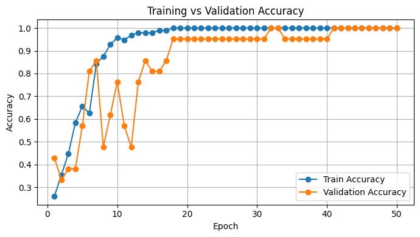
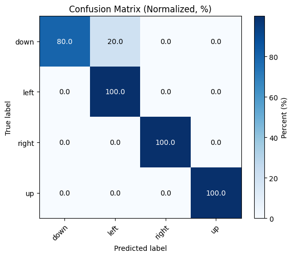

Phase 2
Real-time ML inference + ESP32 data collection + training pipelineRealtime pipeline snapshots
Sliding signal (live stream / windowed input)

Training curves (epoch vs loss and accuracy)
FINAL TEST ACCURACY: 95.24%
Real-time inference demo
Confusion matrix (test set)

What’s new in Phase 2
- ESP32-based data acquisition & structured dataset logging
- PC-side real-time preprocessing → inference loop
- Training + evaluation loop tied to the same label set used in deployment